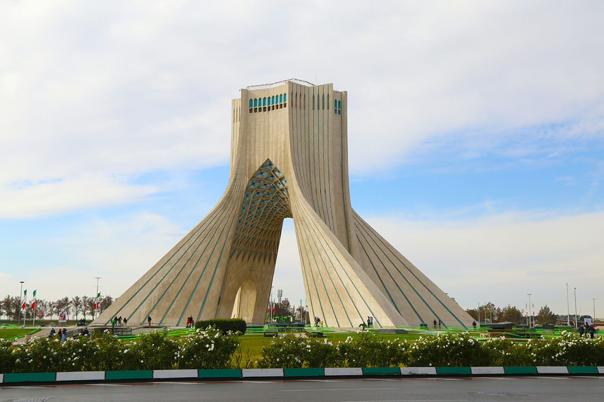
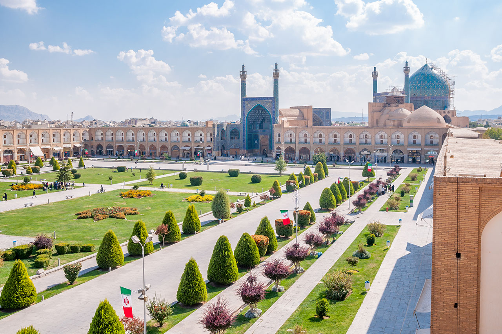
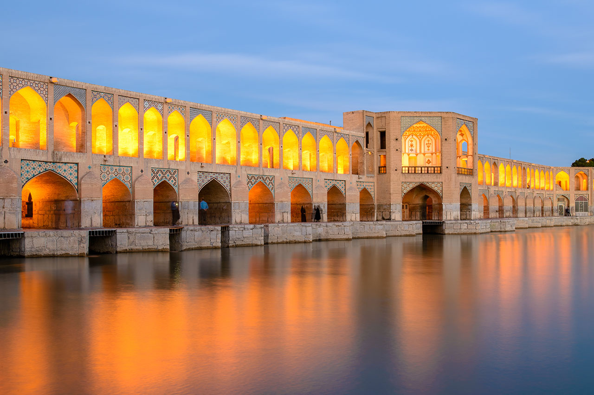
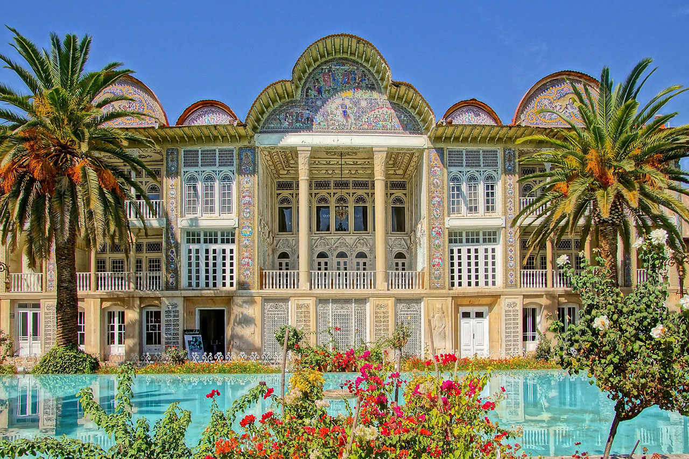

Golestan Palace is a must-visit destination for
those who want to experience the rich history and
culture of Iran. This palace which is decorated with
numerous details, offers visitors a glimpse into the
opulent lifestyle of the Qajar dynasty. With its
stunning architecture, intricate tile work, and
beautiful gardens, Golestan Palace is a feast for
the eyes.

Azadi Tower
In 1967, a competition was held among the Iranian
architecture to design a symbol for the country.
Tower architecture is a combination of Sassanid,
Achaemenid, and Islamic architecture. The main arch
inside the tower is a symbol of the Sassanid era,
the parallel bases are reminiscent of the Achaemenid
style of architecture, and its upper arch is
inspired by Islamic architecture.

Naqsh-e-Jahan Square
Naqsh-e Jahan Square is a complex of historic
buildings and open space that resides at the centre
of Isfahan. The glorious square symbolises the
excitement of the Safavid era when Isfahan became
the capital of Persia. Originally designed to hold
national events and glorify the new capital,
architects of Naqsh-e Jahan had lofty goals.

Khaju Bridge
Khaju Bridge is the finest bridge in Isfahan. This
bridge was built in order of Shah Abbas II, the
Persian Safavid King, in 1650. It is one of the true
examples of Persian architecture and shows the
Safavid cultural influence in Iran. It functions as
a recreation center, social exchange, and culture.
The amazing arches inside the bridge catch
everyone’s attention right at first sight,
especially at nights.

Eram Garden
Eram Garden is one of the nine UNESCO inscribed
cultural heritage sites as Iran's Persian Gardens.
Date of its foundation is not clear, but it was
certainly developed during Seljuqi period, and was
further established during Zand period in the 18th
century. Eram Garden is located in the north of
Shiraz. Eram Garden was designed in four
sections with precise geometrically proportionate
measurements, in order to provide the irrigation
Perspolis
Persepolis palace, the most popular Iranian monument
is a set of very magnificent palaces and the name of
the spring ceremonial capital of the Great
Achaemenid Empire. 515 BC, this is the earliest date
that Andre Godard, the French archaeologist who
excavated Persepolis, could estimate the age of this
magnificent structure. Darius I was the first king
who ordered the construction of this complex with
its terraces and palaces.